Part A: The Power of Diffusion Models
Part 0: Setup
SEED = 12345
3 Images
num_inference_steps=5
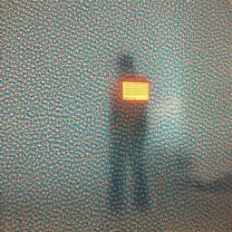
"Hacker in Cory Hall, code glowing in fog."
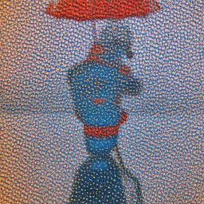
"Robot TA teaching CS 180 in mossy Wheeler."
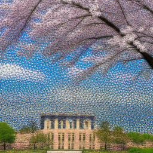
"Drones and cherry blossoms over Memorial Glade."
num_inference_steps=50
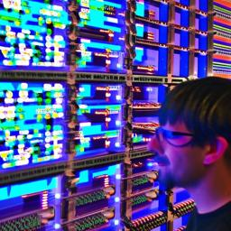
"Hacker in Cory Hall, code glowing in fog."
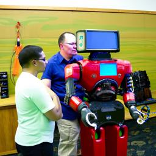
"Robot TA teaching CS 180 in mossy Wheeler."
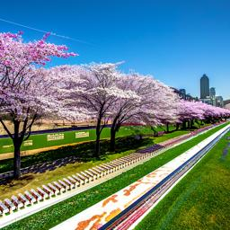
"Drones and cherry blossoms over Memorial Glade."
We see that the quality of the outputs for each prompt improves as num_inference_steps increases.
This makes sense since the more denoising steps taken the more "detailed" an output we can expect.
And the less steps taken, the fast the output is generated, but at the cost of quality, so we see more granular images.
A side note is that I included a lot of UC Berkeley-specific diction, like Cory Hall, CS 180, Memorial Glade, etc., which
isn't general enough for the model to accurately pinpoint, thus we see across generations that the image fails to capture those details,
but it does generate objects that are commonly found, like fog, code, robot, cherry blossoms, etc. Thus overall the generated images
do closely align with my prompts!
Part 1.1: Implementing the Forward Pass
The forward function takes a clean image tensor and a timestep as inputs.
It computes the cumulative product of alphas at the
given timestep using alphas_cumpro. Using this value, it calculates
the scaling factors to blend the clean image with Gaussian noise. The noise is generated by sampling
from a standard normal distribution, and the final noisy image
is obtained by adding a weighted combination of the clean image and the
noise. This process simulates the effect of adding noise to the image at
the specified timestep!

Campanile at Noise Level 250

Campanile at Noise Level 250

Campanile at Noise Level 250
Part 1.2: Classical Denoising
Campanile at Noise Level 250
Campanile at Noise Level 250
Campanile at Noise Level 250
Campanile Denoised Level 250
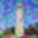
Campanile Denoised Level 250
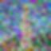
Campanile Denoised Level 250
Part 1.3: Implementing One Step Denoising

Original Campanile
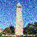
Noisy Campanile (t = 250)
Denoised Campanile Estimate (t = 250)
Original Campanile
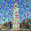
Noisy Campanile (t = 500)
Denoised Campanile Estimate (t = 500)
Original Campanile
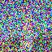
Noisy Campanile (t = 750)
Denoised Campanile Estimate (t = 750)
Part 1.4: Implementing Iterative Denoising
The iterative_denoise function iteratively denoises a noisy image by using a DDPM-based process.
At each timestep, it computes the scaling factors alpha and beta to guide the denoising
process, we call the UNet to predict the noise and variance at the current timestep.
The clean image estimate x_0_est is obtained by removing the predicted noise,
and the next timestep's image is calculated using the DDPM formula. This process is repeated
until the image is fully denoised.
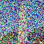
Noisy Campanile (step = 10)
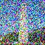
Noisy Campanile (step = 15)
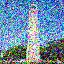
Noisy Campanile (step = 20)
Noisy Campanile (step = 25)
Noisy Campanile (step = 30)
Final Predicted Clean Campanile
One Step Denoised Campanile
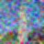
Campanile with Gaussian Blurring
Part 1.5: Diffusion Model Sampling
5 sampled images with prompt "a high quality photo".
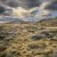
Image 1
Image 2
Image 3
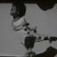
Image 4
Image 5
Part 1.6: Classifier Free Guidance
iterative_denoise_cfg iteratively denoises the noisy image with guidance from
both conditional and unconditional prompts using CFG. For each timestep, we calculate alpha, beta, and other required
variables, then we generate conditional and unconditional noise estimates using the UNet. The CFG noise estimate is
computed by blending the conditional and unconditional noise predictions with a scaling factor.
The clean image estimate, x_0, is derived from the adjusted noise estimate, and the next less noisy
image pred_prev_image is obtained using DDPM formula. Just like above, this process is repeated
until the image is fully denoised!
5 sampled images with prompt "a high quality photo" and a CFG scale of gamma=7.
Image 1
Image 2
Image 3
Image 4
Image 5
Part 1.7: Image-to-image Translation
Edits of the Campanile at distinct noise levels with the conditional text prompt "a high quality photo":
Campanile Edit at Noise Level 1
Campanile Edit at Noise Level 3
Campanile Edit at Noise Level 5
Campanile Edit at Noise Level 7
Campanile Edit at Noise Level 10
Campanile Edit at Noise Level 20
Edits with my image 1:
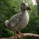
Dodo Image
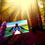
Dodo Edit at Noise Level 1
Dodo Edit at Noise Level 3
Dodo Edit at Noise Level 5
Dodo Edit at Noise Level 7
Dodo Edit at Noise Level 10
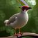
Dodo Edit at Noise Level 20
Edits with my image 2:
Hand Frame Image
Hand Edit at Noise Level 1
Hand Edit at Noise Level 3
Hand Edit at Noise Level 5
Hand Edit at Noise Level 7
Hand Edit at Noise Level 10
Hand Edit at Noise Level 20
Part 1.7.1: Editing Hand-Drawn and Web Images
Stock image of Mr. Cat:
Mr. Cat
Edits of Mr. Cat at distinct noise levels:
Mr. Cat at Noise Level 1
Mr. Cat at Noise Level 3
Mr. Cat at Noise Level 5
Mr. Cat at Noise Level 7
Mr. Cat at Noise Level 10
Mr. Cat at Noise Level 20
Sketch image 1:
Sketch 1
Edits of Sketch 1 at distinct noise levels:
Sketch 1 at Noise Level 1
Sketch 1 at Noise Level 3
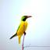
Sketch 1 at Noise Level 5
Sketch 1 at Noise Level 7
Sketch 1 at Noise Level 10
Sketch 1 at Noise Level 20
Sketch image 2:
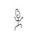
Sketch 2
Edits of Sketch 1 at distinct noise levels:
Sketch 1 at Noise Level 1
Sketch 2 at Noise Level 3
Sketch 2 at Noise Level 5
Sketch 2 at Noise Level 7
Sketch 2 at Noise Level 10
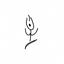
Sketch 2 at Noise Level 20
Part 1.7.2: Inpainting
The inpaint function performs inpaint by repeatedly denoising an
image while enforcing the provided mask. At each timestep, it computes conditional
and unconditional noise predictions from the UNet and combines them using CFG to form a CFG-adjusted noise
estimate. We then reconstruct a cleaner image estimate using the DDPM update rule, add model-predicted variance,
and blend the result with a noised version of the original image so that masked regions are regenerated while
unmasked regions stay faithful to the input! This process repeats across all timesteps until the inpainted image is
fully reconstructed.
Campanile inpainted:
Original Campanile
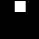
Mask

Hole to Fill
Campanile Inpainted
My example 1 inpainted:
Original Dodo
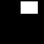
Mask
Dodo Inpainted
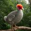
Dodo Inpainted
My example 2 Inpainted:
Original Hand Frame
Mask
Hand Frame Inpainted
Hand Frame Inpainted
Part 1.7.3: Text-Conditioned Image-to-image Translation
Edits of the Campanile at distinct noise levels with prompt "a papaya":
Campanile Edit at Noise Level 1
Campanile Edit at Noise Level 3
Campanile Edit at Noise Level 5
Campanile Edit at Noise Level 7
Campanile Edit at Noise Level 10
Campanile Edit at Noise Level 20
Edits of my image 1 at distinct noise levels with prompt "a car":
Dodo Edit at Noise Level 1
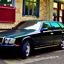
Dodo Edit at Noise Level 3
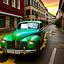
Dodo Edit at Noise Level 5
Dodo Edit at Noise Level 7
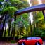
Dodo Edit at Noise Level 10
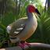
Dodo Edit at Noise Level 20
Edits of my image 2 at distinct noise levels with prompt "a banana":
Hand Edit at Noise Level 1
Hand Edit at Noise Level 3
Hand Edit at Noise Level 5
Hand Edit at Noise Level 7
Hand Edit at Noise Level 10
Hand Edit at Noise Level 20
Part 1.8: Visual Anagrams
The make_flip_illusion function generates the flip illusion by using
the two different prompts and... diffusion! We begin with an initial image and iteratively
update it by applying noise predictions conditioned on two prompts: prompt_embeds_1 for the original image
and prompt_embeds_2 for the flipped one. The noise predictions are combined using
CFG to steer image generation towards both prompts.
The image is then flipped upside down, and the noise for the flipped image is used to update the image in the original orientation.
The result is a smooth transition between the two prompts, creating the flip illusion effect! We continue this process continues until the image converges.
Illusion 1:
'an oil painting of an old man'
'an oil painting of people around a campfire'
Illusion 2:
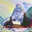
'an oil painting of a snowy mountain village'
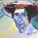
'a man wearing a hat'
Illusion 3:
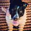
'a photo of a dog'
'a photo of a hipster barista'
Part 1.9: Hybrid Images
The make_hybrids function synthesizes a hybrid image by
combining, again, the two prompts, this time with low and high-frequency content through... diffusion!
The image is updated iteratively using two separate noise estimates: one for low-frequency content and another for
high-frequency content. CFG applied to both estimates enhances the conditioning on the prompts.
The low-frequency noise estimate is blurred using a Gaussian filter, while the high-frequency noise estimate is obtained
by subtracting the low-frequency component--throwback to early projects this semester!
These filtered noise estimates are then combined to produce a hybrid noise prediction.
The resulting image is progressively denoised, with the process repeated until the final hybrid image is generated,
where the low and high-frequency features are harmoniously blended! See below for some cool examples!
Hybrid 1 ("a lithograph of waterfalls" + "a lithograph of a skull"):
Hybrid Image
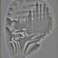
High-pass View
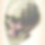
Blurred View
Hybrid 2 ("a sketch of a forest landscape" + "a sketch of an owl face"):
Hybrid Image
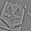
High-pass View
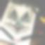
Blurred View